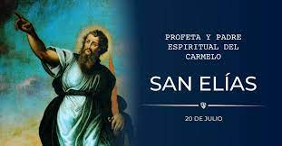

Orden de los Carmelitas, es una orden religiosa Católica que surgió alrededor del siglo XII cuando un grupo de ermitaños, inspirados en el profeta Elías, se retiraron a vivir en el monte Carmelo, considerado el jardín de Palestina; de hecho Karm-El significa «la viña de Dios» en las lenguas semíticas de la zona
LEMA: ZELO ZELATUS SUM PRO DOMINO DEO EXERCITUUM
(Me consume el celo por el Señor, Dios de los Ejércitos, 1Reyes 19:14).
Vivimos este lema a través de: LA ORACIÓN, LA FRATERNIDAD Y EL SERVICIO

Vivimos el carisma carmelitano manteniendonos con nuestras familias y trabajos habituales.
Constituimos una verdadera rama de la Orden del Carmen, y nos comprometemos mediante la promesa de vivir los consejos evangélicos (castidad, pobreza y obediencia) y el espíritu de las bienaventuranzas. Mt 5,1-14
Nos rigimos por la misma Regla de san Alberto de Jerusalén y por constituciones propias.
Se inicia con el Padre Gregorio en el 2016 y consta actualmente, 2024 de Comunidades en Pucusana, Lomas de Marchan y Benjamin Doig